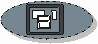

|  |
| Этот артефакт представляет собой логическое и концептуальное описание функциональности системы для определенного сценария, включая взаимодействие, необходимое между пользователями системы и системой. Раскадровка "рассказывает определенную историю". |
Домены: Требования
Типы рабочих продуктов: Спецификация |
|
Назначение
|
Раскадровки используются следующими сотрудниками:
-
аналитиками системы - для изучения, прояснения и фиксации поведенческого взаимодействия, представляемого
себе пользователем, как части выявления требований.
-
разработчиками пользовательского интерфейса - для проектирования пользовательского интерфейса и компоновки
прототипа пользовательского интерфейса;
-
проектировщиками классов, обеспечивающих функциональность пользовательского интерфейса; Они используют
данную информацию для понимания взаимодействий системы и пользователя, так чтобы можно было правильно
спроектировать классы, которые будут реализовывать пользовательский интерфейс;
-
проектировщиками следующей версии системы - для понимания того, как в системе выполняется поток событий;
-
ответственными за тестирование - для тестирования функциональных возможностей системы;
-
руководителем - для планирования и выполнения работы по анализу и проектированию.
Важно помнить, что основной целью раскадровки является понимание потока и взаимодействий в целом, а не создание
прототипа или тестирование внешнего вида пользовательского интерфейса. Раскадровка не должна охватывать виджеты
пользовательского интерфейса или другие связанные с ним вопросы (они должны охватываться прототипом пользовательского
интерфейса).
|
Взаимосвязи
| Роли | Ответственный:
| Изменен:
|
| Задачи | Вход для:
| Выход из:
|
Описание
| Основное описание |
Раскадровки поддерживают выявление требований, предоставляя важные механизмы обратной связи для обнаружения неизвестных
или неясных требований.
|
Ключевые условия
| Раскадровку можно определить для каждого варианта
использования, таким образом поддерживая основанный на вариантах использования подход к проектированию программного
обеспечения, а также предоставляя средства для проверки предположений пользователя (субъекта) об этих вариантах
использования и их роли в потоке событий в этих вариантах использования. |
Доводка
| Опции представления |
Раскадровку можно выразить с использованием визуальных или текстовых представлений, или их сочетания.
Следует решить, требуется ли раскадровка для данного проекта. Содержимое раскадровок следует настроить для
поддержки потребностей проекта.
Раскадровки часто рассматриваются как временные рабочие продукты, и могут не обслуживаться после того, как требования к
алгоритму будут поняты, и в проекте можно будет создать прототип и реализовать пользовательский интерфейс. Однако в
некоторых случаях может потребоваться поддерживать раскадровку на протяжении ряда итераций, например, если существуют
сложные требования, предъявляемые к пользовательскому интерфейсу, на понимание которых требуется время (охватывающее
несколько итераций). Раскадровки в сочетании с реальным пользовательским интерфейсом являются полезными входными
данными для документации конечного пользователя.
|
Дополнительные сведения
© Copyright IBM Corp. 1987, 2006. Все права защищены..
|
|